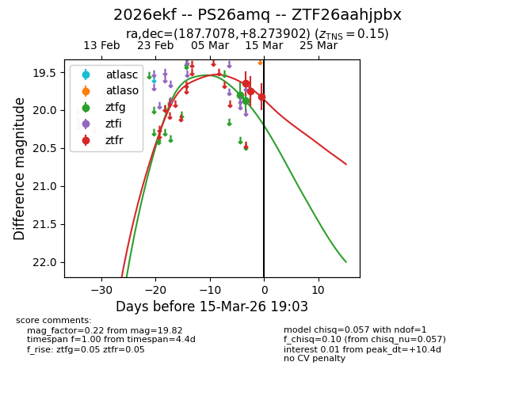
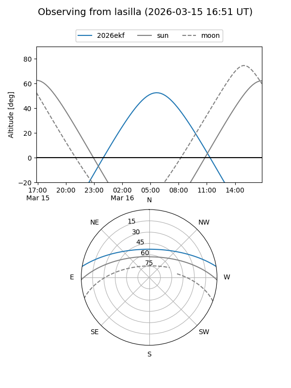
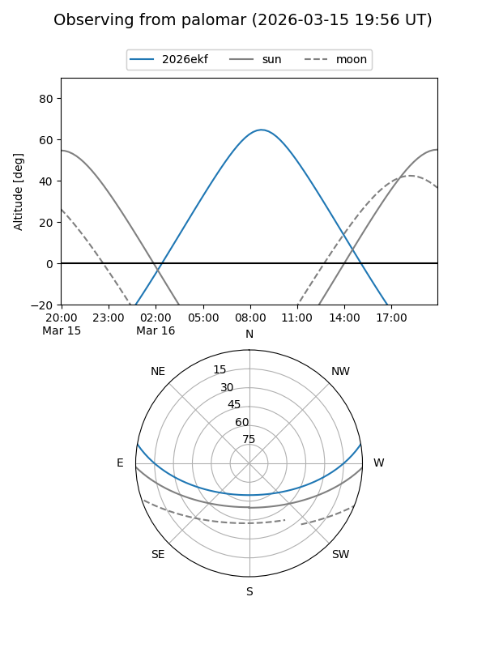
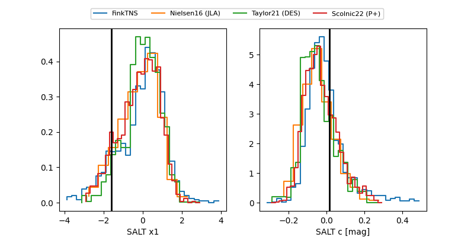

2026ekf
Target 2026ekf at 2026-03-15 19:05
Aliases and brokers:
FINK: link
Lasair: link
ALeRCE: link
TNS: link
YSE: link
alt names
ZTF26aahjpbx (ztf,fink_ztf)
2026ekf (tns,yse)
PS26amq (panstarrs)
Coordinates:
equatorial (ra, dec) = 187.7078,+8.27390
equatorial (HMS+DMS) = 12:30:49.88,+08:16:26.05
galactic (l, b) = (287.4747,+70.52473)
Flags:
confirmed ia
Photometry:
last ztfg=19.88, ztfr=19.82
2 ztfg, 3 ztfr detections
Lightcurve

Visibility


Additional plots
